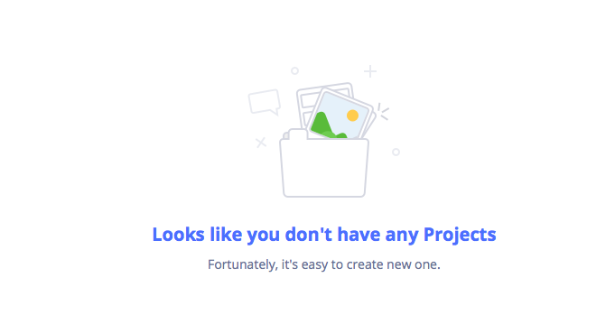

<div>
  <div class="columns is-multiline is-centered">
    <div class="column" v-for="(document, index) in selectedChildren" :key="index" v-show="isFolderType == true">
        <subFolder :document="document" />
    </div>
  </div>

  <div v-if="selectedChildren == undefined" style="text-align:center">
    <br/>
    <a class="button is-primary" @click="createProject">
      <span><i class="fa fa-plus"></i></span>
      New Project
    </a>
  </div>

  <div  v-show="isListType == true">
    <table class="table is-fullwidth is-striped is-narrow">
      <tbody>
        <list :document="document" v-for="(document, index) in selectedChildren" :key="index"></list>
      </tbody>
    </table>
  </div>
</div>